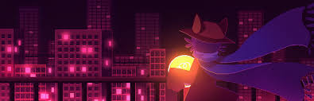

The Games I Like and Why
Hallo, op deze webpagina ga ik de games die mij het meeste zijn bijgebleven en een speciale plaats voor mij
hebben uitlichten. Wilt u terug naar de homepage?

Om te beginnen hebben we het spel dat me het meeste heeft geraakt:
Outer Wilds
Het is een spel over de ruimte en "archeologie". Doorheen het spel ontrafel je een mysterie door oude
teksten van een uitgestorven soort te lezen.
De gameplay bestaat er dan ook uit om met je ruimteschip het kleine zonnestelsel te doorzoeken achter
informatie die je kan helpen om nog meer te ontdekken en te leren.
Op dat vlak is het een interessant gegeven dat het spel feitelijk geen progressie kent, alleszins niet
in de traditionele zin, je eindigt het spel met evenveel als je bent begonnen, al wat je hebt verkregen is
kennis, kennis waarzonder je ook niet het einde kan halen.
Op vlak van het verhaal doet het ook iets speciaal, het spel maakt nauwelijks of geen gebruik van echte
"cutscenes" (ik kan op één hand tellen hoe vaak de controle over de camera wordt afgenomen van de speler),
nochtans zit er wel een verhaal achter.
Het spel manipuleert je dan ook om het verhaal deels te vertellen, aangezien het hoofdpersonage, waar
rond alles draait, niet echt gedefinieerd is, en vrijwel volledig functioneert als een complete voorstelling
van de speler. Met andere woorden, wat jij denkt of voelt als speler, kan feitelijk gezien worden als wat
het karakter denkt of voelt.

OneShot is een vrij simpel spel, het is gemaakt in de rpgmaker engine, dat bekent staat om extreem gebruiksvriendelijk te zijn voor, maar tegelijk ook enorm
gelimiteerd is in wat men kan doen. Nochtans weet OneShot alles uit de engine te halen.
In het spel bestuur je een kat persoon genaamd Niko, Niko wordt plots wakker in een voor hem onbekende wereld, en leert al snel dat hij de messias is,
belast met de opdracht om een lamp, die de plaatselijke zon is, terug te plaatsen in een vuurtoren in de verte.
Daarnaast leert hij ook dat hij een speciale band heeft met de god van deze wereld, die hem direct begeleid maar waar hij ook mee kan praten, deze god is de
speler. Het spel doorbreekt zo ook de 4de wand deels, aangezien de "wereld" waarin Niko zich begeeft ook in het verhaal letterlijk het spel is.
Het is een relatief kort spel, en zoals eerder gezegd, redelijk simpel, maar ik hou ervan vanwege de innovatieve dingen die het doet en het verhaal dat het vertelt.

Als laatste in mijn selectie van spellen om even uit te lichten, zit het spel Inscryption.
Inscryption is een spel waarvan het verhaal moeilijk is om op te sommen, voornamelijk aangezien het spel zijn verhaal vertelt volgens 3 acts, en er tussen elke act een duidelijke breuk zit met de vorige.
Zo lijkt het bij de start van het spel, dat je iemand bent die ontvoerd werd en door een mysterieus wezen geforceerd werd om een kaartspel te spelen.
Al snel wordt je door je ontvoerder los gelaten van de tafel waar je zit en weet je allemaal raadsels te ondtekken in de kamer waar je je bevindt.
Door elementen van het kaartspel te gebruiken weet je uiteindelijk alle raadsels op te lossen, en zo de bovenhand te krijgen op je ontvoerder.
Je verslaat hem en ziet uiteindelijk wat er zich in de mysterieuze lichtgevende kamer bevindt.
Hier eindigt act I en leer je ook heel veel nieuwe informatie die het verhaal op zijn kop zetten wanneer het de fundamentele aard van wie je bent, wie je ontvoerder is en waar je bent, volledig bloot legt.
Het jammere aan Inscryption, is dat op vlak van gameplay en puur plezier, geen van de andere 2 acts de geweldigheid van de eerste kunnen evenaren.
Nochtans is het verhaal goed genoeg om de rest van het spel te willen zien, en heb ik liever een spel dat zichzelf de hele tijd probeert heruit te vinden, dan een spel dat zo lang hetzelfde probeert dat je het uiteindelijk volkomen beu bent.
Inscryption is dus volgens mij een echte aanrader.